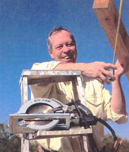
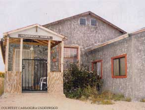
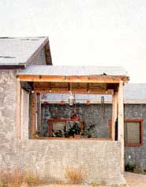
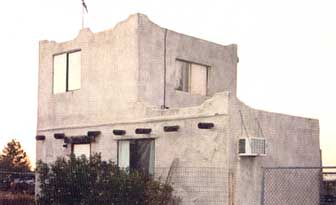
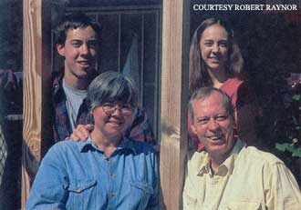
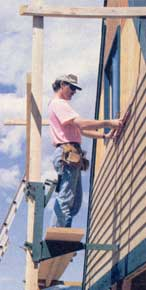

Picture this: You, sipping lemonade, relaxing in the living room of the home you built yourself. It's taken the better part of three years, but you own the house free and clear. No mortgage company has their hands on your home.
Sound impossible? Are you convinced you haven't got the talent to build your own home? I'm here to remove those misconceptions. You can achieve your dream of home ownership by building it yourself. I did. Hundreds of other people I know have done the same thing. They directed their ambition and took charge of their lives and destiny.
Consider this: A residential mortgage will amount to as much as three times the purchase price of a house over the life of the payment schedule. A $100,000 house would cost more than $314,000 at 10 percent interest amortized over 30 years. The monthly mortgage payment can amount to as much as half your regular income. What would you do with an extra $873 every month? Another important reason for building your own home is the family. Building your family home will bring a family closer together in ways you wouldn't dream possible. The greatest reward is each family member recognizes their contribution made a difference, providing self-esteem that will last a lifetime.
I can practically hear your reaction now: I can't possibly build a home. I know some carpentry, but I know nothing about electrical or plumbing or roofing. To these concerns, I would say: Reach inside yourself for the strength that will sustain the pursuit of your objective and go for it. My family and I did, and here's how:
In 1992 I unexpectedly lost my job and nearly lost my home to a mortgage company. My wife, Cyndi, and I agreed we never wanted even to approach that fate again. We resolved to build a home, paycheck by paycheck, without a mortgage. If we could live on the property, we could spend the equivalent of a mortgage payment on building materials each month. We explained the decision to our two children and sought their commitment, as well. At the time our son, Darius, was 10, and our daughter, Cassandra, was only 7. I remember her big, round eyes looking up, asking if she would have her own bedroom.
The whole family began the project with enthusiasm. My wife knew construction was in my soul, and even though she felt overwhelmed by the project, she expressed excitement and optimism. This early commitment was essential to the success of the project. My son always echoed our motivation when, for instance, we'd pass up first-run movies or dinner in a nice restaurant. "We need to save money for building materials; let's wait till we're finished building," he'd say. Big words and big concepts for a preteen, and his focus on our goal kept us inspired.
Within a year we left our home in Mesa, Arizona, for Tucson, Arizona, where I had found a job. We temporarily lived in a friend's mobile home while we shopped for property and used the time to discuss our future home's layout and design. We picked everyone's brains for design ideas, kept notes and later sifted through those ideas for those that fell outside the bounds of rea son or practicality. For example, each of the children wanted a really big room - larger than our planned living room - but we con vinced them more modest rooms would work as well. Cyndi wanted a sewing room in an attic, but I knew that I couldn't build that without some professional help, so that idea had to go. Cyndi did insist the kids have their own bathrooms, and that plan did make the final cut. Now that they're teen-agers, we especially appreciate this luxury. I remember drawing the plan using a piece of finished plywood as my drafting table. I drew most of the floor plan while watching Super Bowl XXVII, sitting on the floor, since we'd packed our furniture in a cargo container. I finished the plans over the next week. By then we'd found an acre site with utilities. The price was right and the land was just what we wanted.
We bought a travel trailer and moved it to our property. Our first step was to get a building permit for the home, which made it possible to bring electricity to our site. We submitted plans, paid fees and got our building permit. We had saved enough money the first month to purchase the land, get the permit and install a septic tank, giving us all the comforts of home. We moved there in March 1993, and our young family had a home for the next few years. We outgrew the trailer quickly, so I added a porch that covered the outdoor washing machine. The next month's funds paid to excavate the basement. I had experience surveying and laid out the foundation with my family's help in holding the elevation rod.
Two months later, we were able to buy the concrete needed for the foundation and slab. I paid for 25 cubic yards of concrete and a day's labor for eight concrete finishers, and we had a slab. We waited two more months, saving enough to purchase 1,500 concrete blocks for the basement walls. I traded an older car we had for a day of work from 10 masons. With my son's help, I mixed and poured grout into the cavities of the block walls, waterproofed then backfilled around the basement.
By late July, four months after we started, the trailer seemed to be getting smaller every day. Though our spirits were high, nerves were growing raw in such close quarters. We knew that finishing the house would mean living through winter in a rick poorly insulated travel trailer. About this time, I read an article touting the value of a backyard gazebo. I realized I could use the gazebo structure as the basis for an enclosed, insulated room, which would make a more suitable home for our family during construction. I could build the structure quickly and we could use it for something else after our home was built. I drew up the plans and got a permit. A friend who was helping pour the foundation made an offhand remark that this design looked like one his cousin built in Mexico, except that his was two stories tall. Then it hit me. Cyndi and I could have some privacy with a small bedroom above the main floor. The foundation was large enough for two stories, so I revised the plan to include a 17x10-foot bedroom.
I bought a wall-mounted heat pump for $5 at a garage sale, and we moved in just after Thanksgiving. We built the floor framing over the basement, installed floor decking and covered it with a large blue tarp. Then we moved our entire life's collection of material wealth into the basement. It had been more than a year since we'd seen some of our belongings. It had been difficult for our kids to do without their toys and special keepsakes, and reveling in our rediscovered possessions felt a bit like Christmas.
In the coming months we continued framing the walls for the main floor. I had some tools but needed to buy an air compressor and used table saw. I built a worktable out of scrap material and let both our children participate in its construction. My son was almost 13 by now, and capable of significant work. My daughter helped as she could: picking up nails, carrying tools and, most important, bringing us lunch. I discovered allowing them to participate in the work gave them a true sense of ownership: Not only was it their home, they were helping build it.
Well into our second year of construction, I found a truss company that had built 20 trusses 6 inches too long for another project. But they were exactly right for my home. I made a deal and got the trusses at a considerable bargain, an acquisition that accelerated the building project.
Throughout the entire building process, our project attracted considerable attention from neighbors and friends, so we had enough volunteer help to do the heavy lifting when we needed such assistance. But my son and I erected all the trusses. And it was here we had a close call.
We began by laying the trusses upside down between the wall frames. My son would lift them, I'd grab them and connect to the previous truss with a temporary scaffold connection. One day I lost control of a truss, and it swung like a pendulum right toward my son. He fell to the floor, averting a serious accident. I thanked God he was OK and vowed to make the project more safety conscious thereafter.
The process of building our home had some unexpected benefits, as well. One Saturday I had begun to install roof decking and looked up to see my neighbor, Dan Beckel, walking over with a tool belt around his waist. He said, "Good morning." Then he began installing the decking with me. I feel truly blessed to have Dan as my friend and neighbor. My project initially was meant to provide a home for my family, which it did. But it also helped create a community, with neighbors meeting one another at our project. It was extraordinary to see people, sometimes total strangers, volunteer to help build our family's home. I imagine it was like this many years ago, when neighbors and friends helped each other build settlements. We found the American spirit of helping one another is still very much alive.
By 1994 the exterior siding was installed and the roof shingles were complete. I turned my attention to learning some new trades: electrical and plumbing. I met a plumber who let me watch him work while I helped by running errands. I ran to his truck searching for tools, fittings or glue. I learned that knowing concepts in the plumbing code don't really tell you how to actually design or install a system. For that, you need design experience. After helping him on a few houses, I gained a working knowledge of the proper use of fittings. At a hardware store, I laid the fittings out on the floor of the plumbing aisle and began to design our drain, waste and vent systems. Now I just had to install it all.
• Does construction seem fun for you? Do you find yourself stopping to watch at construction sites on your way to the grocery store?
• Are you prepared for the inevitable emotional, physical and financial upheaval that accompanies this process? Can you work amid chaos and retain a sense of order? A sense of humor?
• Do you enjoy working by yourself? Can you physically lift heavy materials and tools?
• Do you know how to use some construction tools? Do you like learning about others?
• Will this project bring joy into your life? Can you share your enthusiasm with, and transmit it to, your family?
• Can you visualize each phase of the project before you begin it?
• Are you emotionally stable? Can you take highs and lows in stride?
• Are you conscious of construction safety? Can you predict the danger in a planned action?
The electrical wiring was easier. I became friends with the electrical inspector who explained the vagaries of wiring. I'd designed simple circuitry before, so this job was easy. Circuits are simply wires linking outlets, lights or switches, with a "home run" leading back to the service panel. As I learned more, grounding methods became clear and the inherent safety of a proper installation made sense to me. I installed wall heaters, an electric water heater, dryer and range, but asked for help with a mechanical heat pump.
I passed the plumbing and wiring inspections. Then I began insulating, learning in the process just how irritating fiberglass insulation can be. I borrowed a friend's drywall jack to install drywall on the ceiling and learned how to properly tape drywall joints, then texture over the surface. Cyndi painted the interior of our new home. We bought cabinets from a wholesale distributor, then found a beautiful three-compartment kitchen sink from a plumber remodeling another home.
Although interior trim and doors were yet to be installed, we passed a final inspection and moved into our new home in spring of 1995, two years into the project. Moving in before completing the final trim was a mixed blessing. We wanted to revel in our accomplishment, but we had to endure the inevitable mess caused by retroactively completing trim work amidst our furniture. The end - if house-building projects ever really end -came several years later, when we got to a point of relative completion.
I learned many lessons about construction and about life during this project. I learned an owner-builder with the proper attitude and some experience can still build his or her dream home. You'll discover after a short time that skill in one of the construction trades unfolds naturally to you. You will find yourself working on your home with enthusiasm at midnight and weekends.
It's gratifying the frugal habits we developed during the project remain with us. My son went away to serve as a legislative page during his junior year of high school and spent everything he made. But now that he's in college, he has a job and is being conservative with his money. My daughter has started her first part-time job, working in a grocery store, so she can save enough money to buy a car. She's saved a good bit toward that goal.
Cyndi likes our financial freedom but still is in the habit of discussing any purchases of more than $100 with me. I'm just now becoming OK with traveling or making "major" purchases, such as a camera. Any sacrifice we made has been worth it, knowing now we have the kind of security a mortgage just can't buy.
If you have questions or comments for the Underwoods, you can write them in care of Mother Earth News; 1503 SW 42nd St.; Topeka, KS 66609-1265. Letters will be considered for publication.
|
 Lynn Underwood has reason to smile. He and his family built their home, paycheck-by-paycheck, without incurring debt. He drew the floor plan while watching the Super Bowl. Many people would trade some paint and landscaping for the security of not owing on a mortgage. |
 Many people would trade some paint and landscaping for the security of not owing a mortgage. |
 Sweat equity, strong desire and a willingness to scrimp, scrounge and deal equal a free-and-clear home. |
|
 Adapted from a gazebo plan, this was the Underwoods' home during construction and later served as Darius' teen-age residence. |
 Cyndi and Lynn Underwood say Darius, 19, and Cassandra, 16, maintain the frugal habits they learned throughout the house-building project. |
 |